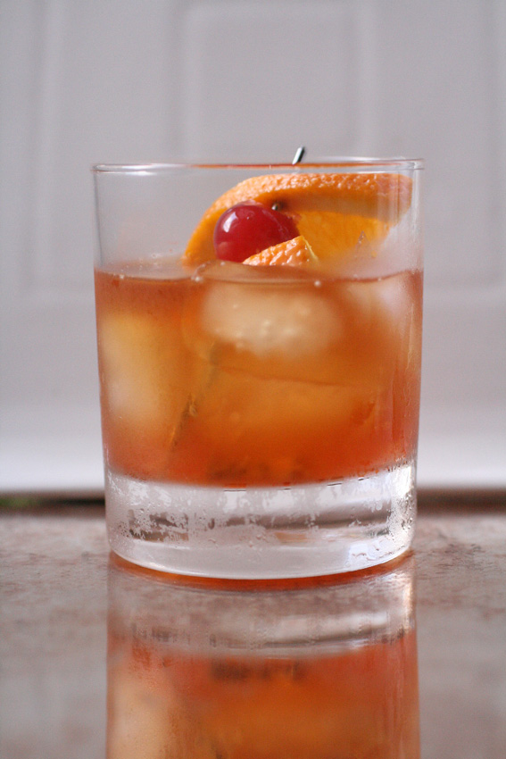

Old-Fashioned Whiskey

Description
This is a funky recipe for Old-Fashioned Whiskey as I'm fancy like that.
Ingredients
- 2 teaspoons simple syrup
- 1 teaspoon water
- 2 dashes bitters
- 1 cup ice cubes
- 1 (1.5 fluid ounce) jigger bourbon whiskey
- 1 slice orange
- 1 maraschino cherry
Directions
- Gather all ingredients.
- Pour simple syrup, water, and bitters into a whiskey glass; stir to combine.
- Add ice cubes and pour in bourbon.
- Garnish with orange slice and maraschino cherry.
- Enjoy!
Home